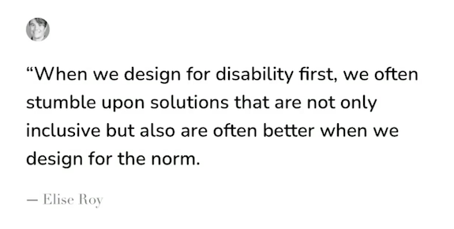
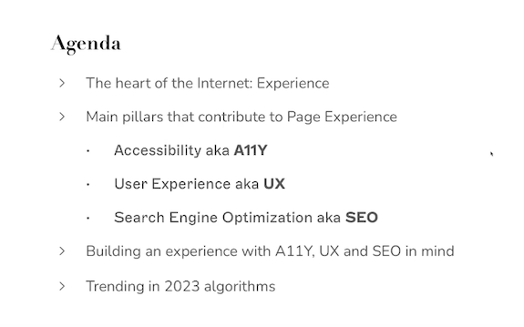
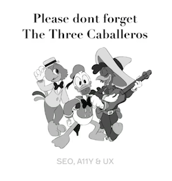
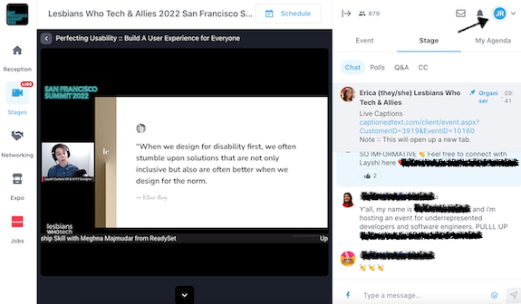

Lesbians Who Tech (& Allies!) Summit
San Francisco, October 2022
CNIT132 MeetUp Assignment, Fall 2022

Spoiling the ending, this quote epitomizes what I learned from attending this presentation. The speaker, Layshi, began by sharing an anecdote of working with a friend who was visually impaired, and how that inspired them to design for accessibilty, or A11Y (because there are eleven letters between the A & Y). I am a prolific reader, and if I couldn't "see" websites with my eyes, I would also rely on how sites were designed to be accessible for those who are visually impaired. What if we designed for those with disabilities first? What creativity would that spark?
Agenda for the session:

More specifically, I learned about how A11Y, User Experience (UX), and SEO are intertwined, or, the Three Caballeros, as the speaker coined:

Page experience considerations, and how to design with A11Y in mind for these:
Page Headings - which help provide structure for text on a page and organize content into smaller sections so it's easy for visitors and search engines to navigate. This can be done by increasing contrast, having a strong heirarchy, and adding diversity.
Page Speed - the average page load speed for websites is 10.3 seconds on desktops, 27.3 seconds on mobile. It's important to consider the page load speed of the time to first byte, fully loaded page, and first meaningful paint. This can be done by adding value, rather that aesthetics, font choices, and use CSS animations rather than relying on complex Javascript.
Now, to prove I was in the virtual room, note my "JR" avatar in the top right corner!

The Lesbians Who Tech & Allies conference occurs annually, and after our virtual-only pandemic life the past few years, 2022 was the return to a virtual and in-person hybrid conference.
From their website, The Lesbians Who Tech & Allies organization is a community of LGBTQ women, non-binary, and trans individuals in and around tech, and the people who support them.
The organization's goals are:
To be more visible to each other
To be more visible to others
To get more women, POC, queer, and trans people in technology
To connect our community to other organizations and companies that are doing incredible work
As a fierce ally of the LGBTQIA+ community, and someone who identifies as a cis-woman who has worked in tech for over twenty years, this organization's goals and mission resonate deeply with me.
I was unable to attend in person, but for students and those new to the industry, in person networking events, and building my personal network has been critical in learning, growing, and yes, finding employment, and connecting with like-minded people is fun!